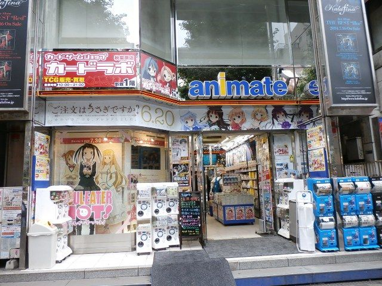

Akihabara is known as one of Japan's most popular electronics districts.
Akihabara is a hub of subcultures with many stores related to games, manga,
and anime, as well as many stores selling electrical and IT products.
It is also known as a sacred place for "cosplayers" who dress up in costumes
of popular idols and anime characters.
Animate

An anime specialty store for all things anime! Comics, character goods,
DVDs and CDs, games, books, TV anime DVDs and comics, anime song CDs,
anime voice actor DVDs and CDs.
If you like anime and want any goods, you should go here.
Maid Cafe
In a maid café, waitresses dressed as maids in maid uniforms act like domestic servants,
using the store as their mansion, and customers are treated as their masters and
householders. Maid cafes are especially popular among men, who respond to customers
with the familiar "moe moe kyuun".